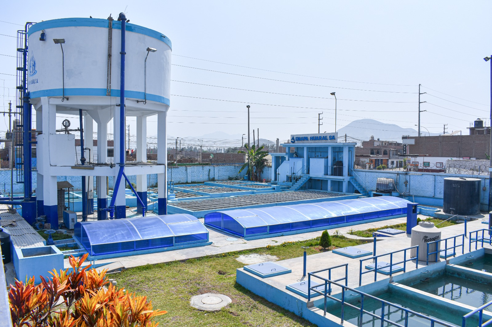
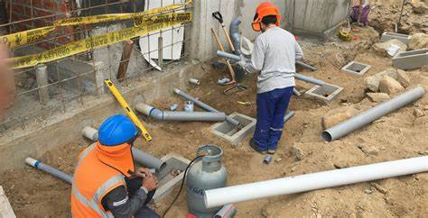

Un ingeniero se encarga del diseño, la planificación y la optimización de los procesos involucrados en el tratamiento de aguas residuales. Esto incluye sistemas de pretratamiento, tratamiento primario, secundario y terciario, como la sedimentación, la biodegradación, la filtración y la desinfección. El ingeniero también garantiza que estos procesos sean eficientes en la eliminación de contaminantes.
La presencia de un ingeniero en una planta de tratamiento de agua potable es fundamental por varias razones, ya que este profesional garantiza el correcto funcionamiento de los procesos y el cumplimiento de los estándares de calidad del agua. Algunas de las principales responsabilidades del ingeniero son: 1. "Diseño y optimización de procesos": El ingeniero es responsable de diseñar y mejorar los sistemas de tratamiento, como la floculación, sedimentación, filtración y desinfección. Debe asegurar que los procesos sean eficientes y que cumplan con las regulaciones.
La presencia de un ingeniero sanitario en una obra es fundamental para garantizar la salud y el bienestar de las personas que utilizarán las instalaciones, así como para proteger el medio ambiente. Su conocimiento técnico y experiencia son esenciales para asegurar que todos los sistemas sanitarios funcionen de manera óptima y segura.